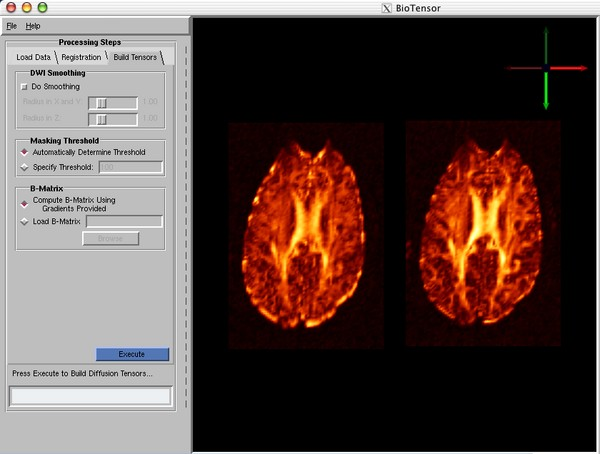

Figure 8: Final Processing Stage.
DWI Smoothing: Later visualization and analysis stages sometimes
benefit from some smoothing of the individual DWIs prior to the
estimation of tensors. This option allows you to Gaussian blur the
DWIs, by controlling the radius (the standard deviation) of the
Gaussian kernel within the slice plane ("Radius in X and Y") as well
as across slices ("Radius in Z").
Masking Threshold: Diffusion tensors can not be meaningfully
calculated in the background (air) of the DWIs, because neither the
non-diffusion-weighted image nor any of the DWIs has any significant
signal there. Diffusion tensors can be calculated inside the CSF
(cerebrospinal fluid), but they do not record any interesting
anatomical structure. In both regions, the value of the DWIs will be
very small, compared to the values inside the brain. BioTensor
performs making of the tensor field based on the mean DWI value so
that these regions do not appear in later visualizations. For this
option, you may specify the mean DWI value used for thresholding
("Specify Threshold"), or you may allow BioTensor to attempt to
automatically find this threshold by histogram analysis. NOTE:
tensors will be computed for all voxels; the DWI masking produces a
separate scalar field which BioTensor uses for controlling
visualization, but which does not scale the tensors themselves.
Note: The 1.20.0 version of BioTensor has a bug, which causes the
automatic threshold button for the Masking Threshold to be ignored.
Instead, the specified threshold is always used, so please
unselect the Automatic checkbox and take care in specifying this value.
This bug will be fixed in the 1.20.1 release.
B-Matrix: In order to estimate tensors from DWIs, the relationship
between each DWI and the diffusion tensor must be known. The B-matrix
is a matrix that captures the weighting that each diffusion tensor
coefficient received in a given DWI. BioTensor currently refers to
the list of B-matrices for all the DWIs as the "B-Matrix". There are
two ways that the B-Matrix information can be communicated to BioTensor.
"Compute B-Matrix Using Gradients Provided": Assuming that the
diffusion weighting caused by the imaging gradients is negligible, the
B-Matrix can be computed directly from the list of gradient
directions, which was used previously for EPI registration. NOTE: in
this case, the first image among the DWIs is assumed to be the
reference T2 image, which exhibits no diffusion weighting, and for
which the B-matrix is assumed to be all zeros ("B=0").
Alternatively, if for each DWI you have computed a B-matrices which
more completely accounts for diffusion weighting, from both imaging
gradients as well as diffusion-encoding gradients, this may be
provided as separate a text file ("Load B-Matrix").
Some important notes on the formatting of the B-Matrix file:
- This is a plain text file, with six numbers per line, although
lines beginning with the pound character ("#") are treated as comments.
- The six floating-point values per line convey the B-matrix for a single DWI.
- The ordering of the B-matrix elements per line is:
Bxx Bxy Bxz Byy Byz Bzz
- The off-diagonal elements of the B-matrix have NOT been pre-multiplied by two.
This multiplication is done internally, to account for how the off-diagonal
elements of the diffusion tensor are actually weighted in each
DWI.
Currently, BioTensor performs linear least-squares fitting to estimate
the diffusion tensors at each sample point. Non-linear tensor estimation
will be included in an upcoming version.
Press the Execute button to compute the DT volume and begin
visualization.
As the visualization stage begins, the system will begin computing a
number of derived quantities; this may take several moments, during
which time the Progress indicator will indicate that the system is
busy. One of the first quantities the system will render are a set of
three orthogonal cutting planes through the DT volume. Once the
Progress indicator changes to "Completed" (green), you can begin
interacting with the visualization.
To begin visualizing the data, press the AutoView button to move the
rendered geometry into the middle of the window. The Autoview button
is located on the Viewer Options tab, but can also be invoked by
pressing Ctrl-V while the mouse is in the Rendering window. The
controls for navigating within the Rendering window are the same as
for the SCIRun ViewWindow
(http://software.sci.utah.edu/doc/User/Guide/usersguide/srug5.html#sec:viewer)
though the full control pane normally found at the bottom of the
ViewWindow has been replaced with the most frequently used subset of
those controls and is now located on the Viewer Options tab.
Within the Vis Options tab of the Visualization pane, there are five
sub-tabs for controlling the visualization settings. The first tab,
"Variance" was used when visualizing the DTI variance data in Section
3. We will now investigate the options on the four other tabs:
Planes, Isosurface, Glyphs, and Fibers.
By default, the cutting planes are rendered when the visualization
pre-processing stage completes, as shown in